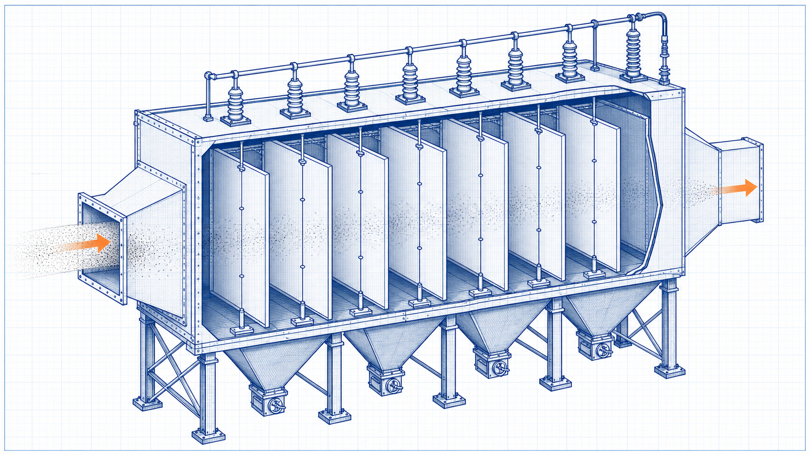
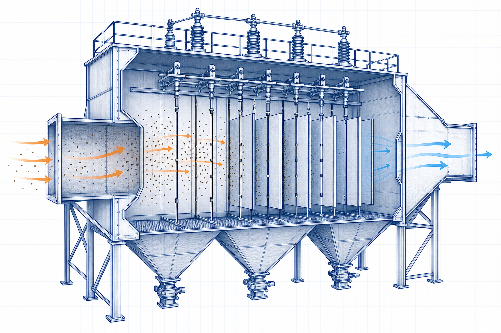

Equipment guide
Electrostatic Precipitator: Working Principle, Components, Types and Applications
An electrostatic precipitator (ESP) removes particles from a gas stream by electrically charging particles and collecting them on oppositely charged surfaces. Gas distribution, electrical conditions, particle resistivity, rapping and hopper discharge all affect performance.

- Content type
- Equipment guide
- Level
- Industrial Equipment › Air Pollution Control Equipment › Electrostatic Precipitators › ESP Fields › Electrostatic Precipitator
- Audience
- Student · Design engineer · Project engineer · Plant engineer
- Last reviewed
- 30 August 2026
What Is an Electrostatic Precipitator?
An electrostatic precipitator is a gas-cleaning device that uses a high-voltage electric field to charge suspended particles. Charged particles migrate toward collecting electrodes, where material is periodically dislodged and removed through hoppers.
Purpose and Plant Location
ESPs are typically installed in large industrial gas streams such as boiler flue gas or process exhaust, integrated with ducts, fans, hoppers, ash handling, controls and stack systems.
Working Principle
A corona-discharge field charges particles. Electrical forces drive charged particles toward collection surfaces. Rapping or another cleaning action removes accumulated material while the gas stream continues through the equipment according to its arrangement.
Main Components and Their Functions
- Discharge electrodes
- Create the electric field and corona used to charge particles.
- Collecting electrodes
- Provide surfaces on which charged particles are deposited.
- Transformer-rectifier and controls
- Supply and regulate high-voltage DC power to electrical fields.
- Rapping and hopper system
- Dislodge collected dust and transfer it from the equipment.
Equipment Diagram
Types and Configurations
- Dry ESPs for dry particulate collection.
- Wet ESPs for specialised wet or sticky aerosol services.
- Horizontal or vertical gas-flow arrangements with one or more electrical fields.
Main Operating Parameters
- Gas flow, temperature, moisture, composition and particle loading.
- Particle resistivity, size distribution and cohesiveness.
- Field voltage/current response, spark rate and control strategy.
- Gas distribution, rapping programme and hopper discharge availability.
Materials of Construction
Materials must resist the stated gas chemistry, temperature, erosion, corrosion, electrical conditions and collected material. Insulators, electrodes, casings, hoppers and duct interfaces require service-specific selection and design.
Selection Inputs and Engineering Considerations
- Characterise the gas stream, particulate properties and required control objective.
- Assess gas conditioning, resistivity behaviour, temperature and moisture limitations.
- Define system flow, pressure-loss, ash handling, electrical supply and access requirements.
- Evaluate control philosophy, start-up/shutdown operation and maintenance needs.
- Use qualified supplier data and applicable requirements for final collection-area, electrical and structural design.
Installation and Process Interfaces
The ESP connects to upstream gas ducts, fan/boiler or process equipment, high-voltage supply, rappers, hopper evacuation, ash conveying, insulation, access platforms and downstream stack or treatment equipment.
Operation Fundamentals
Operate within approved gas and electrical limits. Monitor field response, spark behaviour, gas distribution indications, rappers, hopper level/discharge and emissions trends under the plant’s operating procedure.
Common Problems, Failure Modes and Causes
- Reduced collection from unsuitable particle resistivity or gas distribution.
- Electrical trips or poor field performance from contamination, misalignment or insulation issues.
- Dust buildup caused by ineffective rapping or hopper evacuation.
- Corrosion or condensation due to unsuitable temperature and gas conditioning.
Inspection and Maintenance Basics
- Inspect electrodes, collecting surfaces, rappers, insulators and access systems using approved procedures.
- Trend electrical field response, emissions data and hopper discharge condition.
- Maintain high-voltage equipment under qualified electrical safety controls.
- Coordinate outage cleaning and internal inspection with confined-space requirements.
Applications by Industry
- Utility and industrial boiler flue-gas cleaning.
- Cement, steel, mineral and process-gas particulate control.
- Large-volume gas streams where a suitable ESP configuration is justified.
- Pre-treatment before downstream gas-control systems where applicable.
Frequently Asked Questions
What does an ESP collect?
It primarily collects particles that can be electrically charged and migrated to collection surfaces under suitable gas conditions.
Why does particle resistivity matter?
It affects charging, migration and removal behaviour and can influence achievable performance.
Does rapping improve performance by itself?
It helps remove collected material, but performance also depends on gas distribution, electrical operation, particle properties and discharge handling.
Technical check list
Before relying on this guide
Confirm that the calculation or selection is based on the actual service rather than a nominal description. Identify the current drawing and data-sheet revisions, the operating period represented by measurements, the unit and reference-condition basis, and the responsible person for each critical input. This prevents a valid principle from being applied to an incompatible boundary or outdated condition.
Questions for a competent review
- Does the selected method address the geometry, material, fluid, equipment arrangement and operating range in question?
- Have minimum, maximum, start-up, shutdown, upset, maintenance and future cases been screened where they could govern?
- Are the result, tolerance and rounding appropriate for the quality and uncertainty of the available input data?
- Are plant constraints such as access, isolation, inspection, utilities, controls, safety and environmental duty included in the decision?
- Is there a documented field-verification step before a design, procurement or operating change is approved?
If one of these questions cannot be answered, retain the limitation in the technical record and obtain the necessary evidence or specialist review. The value of an engineering guide is not merely a result; it is a transparent basis for a safe, traceable and practical decision.
Major-system assurance
Data maturity and lifecycle assurance
A major pollution-control system should progress through documented data maturity before it is treated as ready for final selection. Early screening can use design estimates, but later decisions need validated gas or dust properties, duty variations, layout constraints, utility quality, maintenance strategy and an agreed performance-test protocol. Record which values are measured, calculated, guaranteed, assumed or still to be confirmed.
Interfaces that often control long-term performance
Upstream process
Changes in fuel, feed, moisture, throughput, temperature, chemistry or operating mode can change the collection duty and maintenance burden.
Gas path and fan
Confirm duct leakage, distribution, pressure margin, fan curve, damper control, vibration, expansion and interactions with upstream and downstream equipment.
Discharge and disposal
Verify hopper geometry, conveying capacity, isolation, dust conditioning, storage, truck or disposal interfaces and response to bridging or blockage.
People and compliance
Provide safe access, lockout, confined-space controls, high-voltage or compressed-air isolation where applicable, inspection plans and reporting controls.
Close-out evidence
At commissioning, reconcile measured performance with the approved design basis, supplier data and environmental or process requirements. Capture the as-built configuration, set points, calibration status, baseline trends, outstanding actions and the maintenance schedule. That record becomes the reference for future troubleshooting, emissions review, capacity change and management-of-change decisions.
Operations readiness
Operating discipline and abnormal-condition response
Define clear operating limits for flow, temperature, pressure loss, utility quality, level, electrical condition and any emissions or process indicator that demonstrates system health. The operating team should know which limits call for routine adjustment, urgent investigation, controlled derating or shutdown. Alarm rationalisation and written response steps are especially important when several interacting subsystems can mask the original cause of poor performance.
After an abnormal event, preserve relevant trends and inspection evidence, check the safety boundary, determine the physical failure path and verify recovery with representative operating data. Close the event through controlled corrective action, a review of spares and maintenance work, and a management-of-change check whenever the remedy alters the original process, equipment or control basis.
Expanded technical guide
Engineering Context and Practical Use
An electrostatic precipitator (ESP) removes particles from a gas stream by electrically charging particles and collecting them on oppositely charged surfaces. Gas distribution, electrical conditions, particle resistivity, rapping and hopper discharge all affect performance. Engineering reference articles should be used with a stated method, representative inputs, current drawings and qualified review for the actual service condition.
Define the physical and operating boundary before selecting equipment, interpreting performance or changing a set point. Consider normal operation, start-up, shutdown, minimum and maximum duty, maintenance condition, upset cases, seasonal effects and credible future modifications. A non-normal case can govern capacity, reliability, integrity, quality, environmental duty or safety.

Data and assessment basis
Define the boundary
inputs → equipment or system → outcome
Identify interfaces, reference points and the actual decision the assessment supports.
Use compatible data
result = valid method + representative inputs
Record units, service condition, source revision, material or fluid basis and uncertainty.
Check the limit
normal case ≠ governing case
Review the condition that controls capacity, reliability, safety, serviceability or performance.
Verify the result
assessment ↔ field evidence
Compare the conclusion with inspection, measurements, supplier limits and controlled documents.
Practical engineering method
- Define the duty, system boundary, required decision and applicable project or code basis.
- Collect current drawings, data sheets, service properties, operating trends and maintenance history.
- Set normal, minimum, maximum, start-up, upset and future cases that are relevant to Electrostatic Precipitator: Working Principle, Components, Types and Applications.
- Select a method appropriate to the actual configuration and valid range.
- Review interfaces with utilities, controls, access, inspection, isolation and protection systems.
- Test important sensitivities where uncertainty could change the decision.
- Record inputs, sources, limitations, reviewer actions and field-verification requirements.
Operation, maintenance and reliability
Operating condition
Trend the parameters that reveal loss of duty, integrity, quality or environmental performance.
Maintenance access
Provide safe isolation, inspection, cleaning, lifting, spares and reinstatement for the actual arrangement.
Controls and safeguards
Check alarms, trips, interlocks and manual actions over the complete operating envelope.
Change management
Reassess after changes to material, load, fuel, layout, component, software, control or operating procedure.
Field verification
Use calibrated measurements at defined locations and comparable operating conditions.
Competent review
Escalate specialist, code, safety, environmental or supplier decisions beyond this educational scope.
Common decision errors
- Using an obsolete drawing, data sheet, property value or equipment limit.
- Mixing design, actual and reference conditions without a controlled conversion.
- Checking one normal case while missing the governing condition.
- Ignoring maintenance, access, isolation, controls or downstream consequences.
- Claiming precision greater than the evidence supports.
- Treating educational guidance as final design, safety, procurement or compliance approval.
- Failing to update the basis after a controlled change.
Lifecycle Evidence, Field Verification and Change Control
Electrostatic Precipitator: Working Principle, Components, Types and Applications should remain connected to current evidence throughout its service life. Material variation, wear, fouling, corrosion, temperature, loading, contamination, control changes, maintenance practice and upstream process variation can change the basis on which equipment or a calculation was originally selected.
Maintain a usable evidence set
Record whether each important input is measured, calculated, supplier-rated, estimated or assumed. Retain the source, revision, date, units, reference condition, measurement location and expected uncertainty. This prevents a result from being compared with an obsolete data sheet, a different operating case or a measurement taken at another system boundary.
Use equivalent operating conditions when comparing field trends. Document production load, material or fuel condition, relevant pressure and temperature, equipment configuration, controls, instruments and maintenance state. A plausible trend can be misleading if these conditions are not comparable.
Check the actual governing condition
Review normal operation as well as start-up, shutdown, low load, maximum duty, dirty condition, maintenance bypass, upset, seasonal effect and credible future modification. The governing case may control capacity, reliability, integrity, emissions, quality, energy, electrical duty, serviceability or safety.
If reasonable uncertainty changes a decision, improve the evidence through inspection, representative testing, calibrated measurement, supplier confirmation, a controlled trial or specialist analysis. This is more valuable than reporting extra decimal places from an uncertain basis.
Turn maintenance into engineering information
Inspection findings can reveal local wear, leakage, buildup, cracking, corrosion, misalignment, overheating, abnormal vibration, control instability or loss of access that simple selection methods do not show. Record the location, condition, observed mechanism, action and follow-up result so future decisions use the actual service history.
Define the early-warning parameters, review trigger, responsible role and escalation path. Repeated alarms, manual intervention, rising energy, pressure loss, reduced capacity, dust release, unstable flow or recurring component damage should be investigated as system evidence, not reset as isolated symptoms.
Implement controlled change
Before changing material, equipment, layout, settings, controls, operating procedure or maintenance practice, check affected drawings, equipment limits, protective functions, isolation requirements, permits, training, spares and downstream interfaces. A local improvement can move a problem to another part of the system.
After implementation, compare measured performance with stated acceptance criteria at comparable conditions, update the controlled record and document any remaining limitation. This page is an educational reference; final project, code, safety, environmental, electrical and procurement decisions require qualified review with current site information.
Core engineering extension
Technical Basis, Interpretation and Engineering Limits
Electrostatic Precipitator: Working Principle, Components, Types and Applications is a core engineering subject because it connects directly to how a system is defined, selected, analysed, operated or maintained. A correct result depends on a clear boundary, compatible data, an appropriate method and an understanding of what the method does not include.
Define conditions before applying a relationship
State the material or fluid, geometry, equipment configuration, pressure, temperature, load, flow, reference condition and operating point that each value represents. Distinguish design data from measured data, nominal ratings from actual performance, and a controlled specification from a preliminary estimate. A technically correct relationship can give an unsuitable answer when its inputs represent another condition.
Build the calculation or assessment from a transparent sequence: define the decision; identify the control volume or physical boundary; collect reliable inputs; state assumptions; apply a method within its valid range; compare the result with independent evidence; and record the limitation or next verification action. This makes the work reviewable and helps operators and maintainers understand what the result means.
Use dimensionally consistent data
Keep units, reference state and property basis consistent. Check whether a pressure is absolute or gauge, a temperature is suitable for the selected relationship, a density or property belongs to the actual material condition, a flow is mass or volume based, and a value is instantaneous, rated, average or maximum. Unit conversion is not merely arithmetic when reference conditions differ.
Where a method produces a precise numerical value, compare its likely uncertainty with the quality of the input data. Report a sensible number of significant figures and make clear which input has the greatest influence. If uncertainty could change a decision, obtain better field data or a specialist calculation rather than adding unsupported precision.
Connect theory with equipment behaviour
Real systems contain fittings, interfaces, fouling, wear, leaks, heat loss, bypasses, controls, vibration, access constraints and non-uniform conditions. Use field observation and maintenance findings to determine whether the simplified model still represents the installation. A difference between predicted and observed behaviour is evidence to investigate, not automatically an error in either result.
Review start-up, shutdown, minimum load, maximum duty, dirty condition, maintenance condition, upset and future modification. These cases can govern a different limit from normal operation and may require another method, another safety margin or a changed operating procedure.
Illustrative review approach
A practical review starts by comparing the intended duty with current measured behaviour, then checks assumptions, units, data source, boundary and interfaces. If the difference remains meaningful, inspect the equipment and process conditions, test the sensitive variables and identify whether the correct action is data collection, maintenance, operating adjustment, redesign or qualified specialist review.
Retain the calculation, source information, test record, limitations, reviewer comments and change history. This preserves the engineering basis through design, commissioning, operation and maintenance and prevents an educational guide from becoming an uncontrolled project instruction.
Major-system performance extension
Integrated Performance, Maintenance and Safety Review
Electrostatic Precipitator: Working Principle, Components, Types and Applications should be evaluated as a complete system, including the source or capture interface, gas or material path, collection or treatment mechanism, controls, utilities, discharge or residual handling, monitoring, maintenance access and protective systems. A good result for one component does not prove that the system is safe, reliable or compliant.
Establish performance criteria before investigation: flow or load, inlet condition, outlet requirement, pressure loss, energy, reliability, emission or quality measure, maintenance interval and applicable safety constraints. Measurements must be made at defined locations and conditions so changes can be attributed to equipment performance rather than changing process duty or sampling method.
Condition monitoring and diagnosis
Trend the parameters that expose degradation, including pressure loss, temperature, flow distribution, power, cleaning or energisation response, material discharge, leakage, outlet quality and maintenance findings. Interpret trends with upstream load, fuel/feed characteristics, moisture, gas condition, operating mode and equipment configuration. A single dashboard value seldom identifies the actual cause.
Plan inspection and spares around credible failure mechanisms. Access, isolation, cleaning, lifting, dust or residue handling, electrical safety, hot work, confined-space exposure and reinstatement should be addressed before a failure occurs. A repair that restores the local component but not the system condition will shorten the next operating interval.
Performance test and change management
Use a controlled test plan after commissioning, major maintenance or a significant change. Define stable operating cases, instrument status, acceptance criteria, source data, calculated and measured values, deviation review and final decision. Update the controlled drawings, procedures, training and operating limits following any approved modification.
Major systems can affect environmental performance, combustible dust, pressure, electrical energy, process availability and worker safety. This detailed educational summary does not replace project-specific performance guarantees, safety studies, permits, codes, supplier requirements or qualified engineering approval.
Expanded FAQs
What should be established first?
Establish the actual system boundary, relevant service condition, required decision and governing case for Electrostatic Precipitator: Working Principle, Components, Types and Applications.
Why is normal operation not enough?
Start-up, low-load, peak, maintenance, upset and future cases can control different limits.
Which records should be retained?
Keep inputs, source and drawing revisions, assumptions, results, limitations, review record and verification evidence.
When should the assessment be repeated?
Repeat it after a material, equipment, route, load, control or operating-procedure change.
How should the result be checked?
Use inspection and calibrated measurements at the same boundary and condition basis.
Can this page approve final project work?
No. Final design, code, safety, procurement and compliance decisions require current project information and qualified review.
Why involve operations and maintenance?
They identify practical limits involving access, isolation, cleaning, reliability and actual behaviour.
What makes input data representative?
It matches the actual material, configuration, service, source revision, measurement location and operating condition.
What is an important limitation?
A simplified guide cannot include every site-specific geometry, degradation mechanism, safeguard or code requirement.
What should be reviewed after commissioning?
Compare performance, condition, alarms, losses, quality and maintenance findings with the documented basis.
How should unexpected behaviour be handled?
Verify the data and boundary, investigate the difference and follow the approved technical-review or change-management process.
Applied engineering review
Electrostatic precipitators: decision basis and field verification
Assess collection duty from gas flow, particulate size and resistivity, temperature, chemistry, electrical field conditions, gas distribution and rapping/discharge performance. High collecting area cannot compensate for unstable energisation, poor distribution or unsuitable ash handling.
Evidence before action
Review secondary voltage and current, spark rate, rapper operation, inlet and outlet particulate measurements, gas temperature, opacity, hopper evacuation and inspection evidence for electrodes, insulators and gas passages. The technical record should show the source revision, unit basis, measurement location, operating mode and known limitations so that another competent person can reproduce the conclusion.
Review sequence
- State the decision that the assessment must support and establish the system boundary.
- Gather current drawings, data sheets, operating records, inspection evidence and applicable project or code requirements.
- Define normal, limiting, start-up, shutdown, upset and future cases that are relevant to the service.
- Use a method whose assumptions, property basis and validity range match the actual arrangement.
- Check the outcome against independent measurements, supplier information or physical evidence.
- Record sensitivity, uncertainty, actions, owner and any required follow-up measurement or inspection.
Limitations and safeguards
Important review points are high-voltage isolation, resistivity changes, back corona, ash deposition, gas leakage, access control, fire or explosion hazards and the integrity of downstream ash handling. This educational page supports preliminary understanding and does not replace a controlled design calculation, manufacturer instruction, safety study, statutory inspection or review by a qualified engineer.
Decision record
Before implementing a change, retain the governing case, key assumptions, source data, result, reviewer comments, verification plan and change-control reference. Reassess the conclusion when the material, geometry, operating condition, control arrangement, equipment condition or governing requirement changes.
System-level engineering
Electrostatic precipitators: lifecycle, selection and reliability review
For a major industrial system, the technically correct outcome is not only a rated capacity or a collection-performance number. It is a controlled arrangement that continues to perform across varying duty, maintenance outages, material changes, environmental conditions and foreseeable abnormal events. Selection should therefore include interfaces with upstream generation, downstream handling, utilities, controls, structures, access, safety systems and disposal routes.
Selection matrix
Process and duty
Define quantity, composition, particle or contaminant behaviour, temperature, pressure, moisture, chemistry, variability, upset conditions and required outlet performance.
Equipment configuration
Review capacity margin, modules or compartments, flow distribution, access, isolation, spares, redundancy, start-up sequence and future expansion space.
Utilities and controls
Confirm electrical supply, compressed air, water, steam or reagent requirements; include instrument quality, alarms, trips, interlocks and manual response.
Reliability and maintenance
Plan inspection, cleaning, replacement, lifting, isolation, waste discharge, failure response, condition monitoring and availability targets from the beginning.
Performance verification plan
Define measurable acceptance criteria before procurement or modification. The plan should identify sampling points, instruments, calibration status, operating stability, test duration, calculation method, environmental or safety constraints, responsibility for witnessing and how deviations will be investigated. A single short test cannot prove long-term reliability where loading, chemistry, weather, cleaning condition or utility quality vary.
During operation, retain trends that show the system’s physical condition as well as its headline performance: pressure loss, electrical or utility consumption, temperature, vibration, leakage, discharge behaviour, alarms, maintenance interventions and inspection findings. Use trend changes to trigger investigation before an emission, production or integrity limit is exceeded.
Failure prevention and change control
Review credible failure paths such as maldistribution, bypassing, fouling, wear, corrosion, loss of utility, control error, discharge blockage, insulation failure, structural damage and unsafe access. Each should have a practical prevention, detection and response measure. When fuel, feed, throughput, material, layout, duct route, control logic or maintenance strategy changes, repeat the relevant design and safety checks rather than assuming the original basis still applies.
Engineering judgement
The final choice must balance performance, availability, operability, maintainability, lifecycle cost, constructability and statutory obligations. A qualified engineer should review the controlled data, applicable requirements and site-specific hazards before final design, procurement or operation decisions are made.
Literature-informed technical note
ESP collection performance and operating controls
ESP performance depends on more than installed collecting area. Gas distribution, particle size and electrical resistivity, temperature, moisture, chemistry, inlet loading, energisation, rapper operation, hopper evacuation and leakage all affect collection. Review these factors as a system before attributing poor outlet performance to a single transformer-rectifier set or field.
ESPs are often selected where a low gas-side pressure loss and tolerance of elevated temperature are beneficial, but that comparison does not remove the need to control the electrical and material-handling interfaces. Voltage and current trends, spark behaviour, field availability, rapping condition, hopper level, ash transport and representative outlet measurement provide a more useful operating picture than any single indicator.
Use of performance data
Compare measurements at consistent load, fuel or feed condition, gas temperature and moisture basis. When an unexplained change occurs, verify the sampling boundary and calibration, inspect for air in-leakage or bypassing, then review gas distribution, electrode and collecting-surface condition, insulators, rapping and ash removal. Final electrical, mechanical and emission decisions require qualified review and current site data.
Literature reviewed for this update
- N. P. Cheremisinoff, Handbook of Air Pollution Prevention and Control.
- Air Pollution Control Technology Handbook, electrostatic-precipitator chapters.
This is an original educational summary based on the listed literature. It does not reproduce protected source text, figures, tables or design data. Confirm current standards, project documents and supplier information before use.
References
- Cooper, C. D. and Alley, F. C. Air Pollution Control: A Design Approach. 4th ed. Waveland Press. 2011.
- de Nevers, N. Air Pollution Control Engineering. 3rd ed. Waveland Press. 2017.
This page is an original educational summary. It does not reproduce protected book text, tables, figures or standards material.